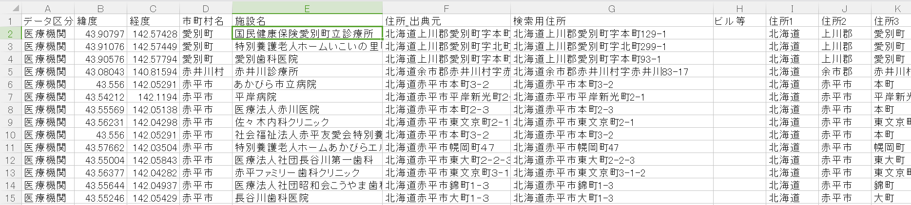

オープンデータ用北海道施設位置情報データベース

北海道施設位置情報データベースについて
ここで公開しているデータは、国土数値情報や、道内市町村のオープンデータなどから集めた北海道の施設の位置情報（緯度経度）をCSVでまとめたものです。
オープンデータ用北海道施設位置情報データベース（Hokkaido_OD_GeoDataBase2018.csv）
市町村などがオープンデータを作る場合、国の推奨データセットで避難所やAED設置箇所などの一覧表を作成しますが、その中に緯度経度を入力する部分があります。たくさんの施設の位置情報を地図などから取得するのも大変ですし、国の説明資料にあるようなアドレスマッチングでは、精度がイマイチの場合が多いです。
そこで、道内の施設情報に位置情報（緯度経度）を付けたデータベースのCSVファイルを作成しました。
市町村名、施設名称でマッチングすることで、施設の一覧表に緯度経度をつけることができます。
このデータベースに使われている施設データは古い場合が有り、名称の変更、閉店などで、現在はすでに無い場合や、新しくできた施設は反映されていない場合があります。
＜国土数値情報＞
データベースは、国土交通省国土政策局に次の「国土数値情報」をもとに喜多耕一が編集・加工しています。(国土数値情報利用規約)
- 医療機関（平成26年）
- 市町村役場等及び公共集会施設（平成22年）
- 都市公園（平成23年）
- 福祉施設（平成27年）
- 消防署（平成24年）
- 警察署（平成24年）
- 避難施設（平成24年）
- 文化施設（平成25年）
- 国・都道府県機関（平成25年）
- 学校（平成25年）
- 郵便局（平成25年）
- 集客施設（平成26年）
- 市区町村役場（平成26年）
＜北海道内市町村のオープンデータ（緯度経度のあるもの）＞
- 旭川市
- 音更町
- 室蘭市
- 森町
- 函館市
- 八雲町
- 別海町
今後も道内市町村で新たに緯度経度付きデータがオープンデータとなれば、その都度追加していきます。
利用にあたって
＜フリーソフトCSVJOIN＞
このデータベースを便利に使うには、２つのCSVファイルをキーで結合できる「CSVJOIN」というフリーソフトを使うと便利です。
このソフトウエアは、ベクターでダウンロードできます。このような便利なソフトを作っていただいた作者様には感謝します。
CSVJOINの使い方は、PDFファイルにまとめています。そちらを参照してください。
CSVJOINは、完全一致しないと、データ結合されないの注意してください。しかし、６～８割くらいの施設は結合できると思いますので、業務の軽減にはなると思います。
CSVJOINで結合できなかったデータは、Excelのフィルター機能などで検索し、緯度経度をコピーしてください。
＜ExcelのVlookup関数＞
ExcelでVlookup関数を使うと、Excelで作った一覧表で緯度経度を検索することが可能です。
「Hokkaido_OD_GeoDataBase2018.csv」をExcelで開き、オートフィルターで検索したい市町村のみ表示して、データをコピーします。そして、緯度経度を追加したい一覧表と同じファイルの別のシートに貼り付けます。
Vlookup関数で、施設名、緯度、経度を検索できるように式を作成すると、緯度経度を一覧表につけることができます。
サンプルファイルを用意していますので、そちらで式の作り方を確認してください。（サンプルは富良野市の避難所データ）
サンプルファイルダウンロード
＜QGISでのフィールド結合＞
QGISのレイヤの結合でも、データの結合ができます。ただしこちらは１つのフィールドでしかマッチングできないので、予め「市町村名＋施設名」のフォールドを作っておいて結合してください。
位置情報を確かめるためには
作成した緯度経度がきちんとあっているか確認するためには、ひなたGISを使います。ひなたGISは宮崎県庁の職員の方が開発したWebGISです。
「緯度」「経度」というフィールドのあるCSVファイルを、ひなたGISの地図画面にドラッグ＆ドロップすると、地図上にポイントが表示されます。正しい位置に表示されているか確認してください。
施設位置情報データベースCSVファイルについて
施設位置情報データベースCSVファイルには、次のフィールドがあります。
- 施設名：施設の名称です。
- 市町村名：施設のある市町村名です。
- 緯度、経度：施設の位置情報です。10進数の角度で記入しています。
- 住所_出典元：国土数値情報のデータに入力されていた住所です。
- 検索用住所：出典元の住所に「北海道」「市町村名」などを追加し、丁目、番地の数字を半角にしています。また、「丁目」、「番地」という表示は削除し「-」でつなげています。
- ビル等：施設が入っている建物の名前があれば記載しています。
- データ区分：国土数値情報のデータの種類です。
- 出典：位置情報の元となったデータの名称です。
- 原典資料名：国土数値情報のデータに「原典資料名」が入力されていれば、名称を記入しています。オープンデータの場合はファイル名を記載しています。
施設名称は、なるべく省略しないようにしています（例：（株）→株式会社 など）。また、名称の中にあるスペースは削除しています。
検索用住所は、丁目、番地などは「-」に変更しています。また数字は半角にしています。
他の都府県担当者向けデータベースの作り方
北海道以外の都府県の担当者の方が、これと同じデータベースを作ろうと思った時用に、作り方を簡単に記載しておきます。
必要なソフトウエアは、QGISとExcelです。（この説明でのQGISは2.18を基本としています。QGIS3ではメニューの名称などが違う場合があるので注意してください）
また、事前にQGISで使える都府県の市町村ポリゴン（基盤地図情報や国土数値情報で入手可能）（シェープファイルなど）を準備しておきます。市町村ポリゴンの座標系はJGD2000（緯度経度）（EPSG:4612）にしておきます。
- 国土数値情報から、ダウンロードしたいデータを選択し、都府県名を選択して、データをダウンロードします。ダウンロードされるデータはシェープファイルです。データを選択したときに表示されるデータの内容、作成年、利用にあたっての注意（別に権利があるなど）などをよく確認しておきましょう。
- QGISを起動して、事前に準備していた市町村ポリゴンをレイヤに追加しておきます。
- ダウンロードしたシェープファイル（以下、データshp）もレイヤに追加しておきます。たまに座標系の指定されていないデータがありますが、座標系はすべてJGD2000（緯度経度）（EPSG:4612）です。
- まずは、緯度経度のフィールドを作成します。データshpを選択し、フィールド計算機を起動します。「新しいフィールドを作る」の「出力フィールド名」に「緯度」と入力し、「出力フィールドタイプ」を「小数点付き数値(real)」にして、精度（小数点以下の桁数）を「5」くらいにします。式に「$y」と入力し、「OK」ボタンをクリックすると、緯度フィールドに座標が入力されます。同じように経度も「$x」で作成します。
- 次にデータshpに市町村名を入力します。ポイントと重なっている市町村ポリゴンのデータを結合します。「ベクター」メニュー→「データマネジメントツール」→「属性の結合」を選択します。
- 「対象ベクタレイヤ」にデータshp、「ベクタレイヤを結合する」に市町村ポリゴンを選択します。このとき、EPSGが同じことを確認してください。違う場合は、レイヤの名前をつけて保存で座標系を変更したデータを準備してください。
「交差する」にチェックを付けて、「統計サマリー」は空欄にします。「結合されるテーブル」は「全てのレコードを残す（マッチしない対象レコードも含む）」にします。「Run」ボタンをクリックすると、データが結合された新しい「結合されるレイヤ」が作成されます。
- 「結合されるレイヤ」の不要なフィールドを削除します。
- 「結合されるレイヤ」をCSVファイルで保存します。レイヤを右クリックし、「名前をつけて保存する」を選択します。「形式」を「カンマで区切られた値［CSV］」にします。「ブラウズ」ボタンをクリックして、ファイルの保存先を指定します。座標系は関係ありませんので何でもいいです。エンコーディングは「Shift_JIS」にしておくほうが日本では使いやすいでしょう。「OK」ボタンをクリックすると、ファイルが保存されます。
- QGISでの作業は終了したので、QGISは閉じます。
- 作成したCSVをExcelで開きます。
- フィールド名を適宜変更してください。また、不要なデータがあれば削除します。
- 施設名はできるだけ省略しない形にしておきましょう。（（株）→株式会社 など）
- 今回は住所はあまり関係ありませんが、気になる人は、都道府県名、市町村名を住所に追加してください。
- データに不要な空白スペースがある場合があるので、Excelの置き換え機能で空白スペースを削除します。
- 市に区がある場合は、市町村名と区名の列を分けて記載したほうが、利用しやすいと思います。（利用者はくっついたデータを分離するより、分離しているデータを結合するほうが作業しやすい）
- ファイルをCSVで保存すると完成です。
更新履歴
2018-09-17 Githubにデータを登録
2018-09-18 「Hokkaido_OD_GeoDataBase2018.csv」にオープンデータを追加。Vlookup関数のサンプルを追加。
このデータの作者
このデータは、喜多耕一が個人的に作成しました。データに対する問い合わせは、
qgisshitumonアットgmail.com
にお願いします。（アットの部分を@に置き換えてください。）